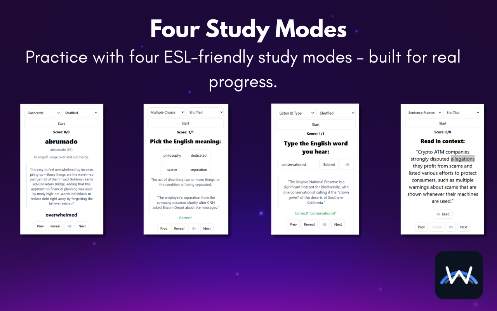

Save the word and the sentence you found it in.
Highlight a word you don't know, right-click, and WordBridge shows the definition, pronunciation and a translation in your language. The word saves itself along with the sentence around it, so when you review it later you remember where it came from and what it meant there.
"Rain in the desert is seasonal and scarce."
Most vocabulary tools save the word and the definition. The part that helps you remember it, the sentence where you actually met it, gets thrown away. WordBridge keeps it.
And the week before. Saving it the moment you look it up means the third lookup is a review instead of a surprise.
A dictionary tells you what "scarce" means. Your sentence shows how a real writer used it.
Your deck comes from what you already read, so every word is one you've run into.
Saving takes no extra step. Looking a word up is enough.
Each mode uses your own sentences, so you practice the word the way you first saw it. Shuffle the deck or go in order.

See the translation, definition and sentence, then reveal the word.
Pick the right word for the meaning from four options.
Hear the word read aloud and type what you heard.
Read the word back inside its original sentence.
Saved words, sentences and settings are stored locally in Chrome. There's no sign-up and no WordBridge server. Export your deck as a file whenever you want a backup.
To look a word up, WordBridge sends just that word to public dictionary services and to MyMemory for the translation. Your sentences and the pages you read aren't sent anywhere. Read the privacy policy.
Yes, every feature. If it helps you, there's an optional Buy Me a Coffee link.
Definitions are for English words. Pick one of 12 native languages in settings, including Spanish, Chinese, Korean, Japanese and Arabic, for a quick translation next to each definition.
Not yet. If you'd use one, email hello@dahvio.com with the subject "WordBridge for iPhone". Those emails decide whether it gets built.
Email hello@dahvio.com. The word you looked up and the page you were on is usually enough to go on.